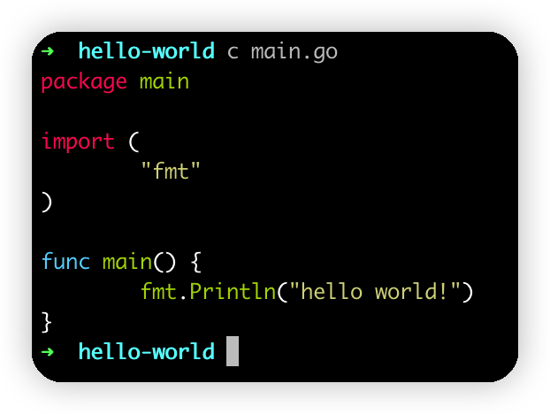
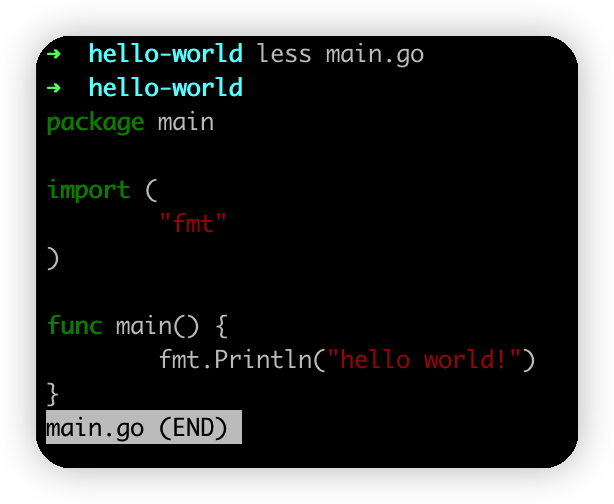

如何让less具有语法高亮功能
有时候我们会用less命令来看代码，但他们没有语法高亮功能。
怎么能让他们像IDE一样有语法高亮功能呢？
首先，我们先找一个有能够在控制台给代码加语法高亮功能的工具
这个Pygments就挺好的，
安装方式，在mac下可以用brew来安装
brew install pygments
使用方式，直接后面接文件名就可以了
pygmentize main.go
其它用法请参考官方文档：https://pygments.org/docs/cmdline/
他还可以选择不同的高亮样式，支持哪些样式呢？在这里找https://pygments.org/styles/，比如这个monokai样式就不错
pygmentize -O style=monokai main.go
我们可以定义一个别名，比如
alias c='pygmentize -O style=monokai'
然后就可以用c这个命令来代替cat看代码了，效果如下：

不过平时可能你习惯用less来看，并且less是带翻页功能的，那怎么能让less命令带语法高亮呢？
这里要用到less的INPUT PREPROCESSOR功能，我们man less，然后搜索INPUT PREPROCESSOR就可以看到它的介绍。
INPUT PREPROCESSOR
You may define an "input preprocessor" for less. Before less opens a file, it first gives your input preprocessor a chance to modify the way the contents of the file are displayed.
简单来说，就是less命令，支持你定义一个预处理器，在用less看一个文件之前，先用这个预处理器把你要打开的文件处理一下。
结合上面讲的pygmentize命令，那只要在查看文件前，先用这个pygmentize把文件内容处理下就可以了。
那怎么设置预处理器呢？手册里也有写：
To set up an input preprocessor, set the LESSOPEN environment variable to a command line which will invoke your input preprocessor. This command line should include one occurrence of the string "%s", which will be replaced by the filename when the input preproces‐sor command is invoked.
也就是设置一个LESSOPEN的环境变量就可以了，这个环境变量要带上%s占位符，它会把这个替换成要打开的文件名。
具体用法有2种方式
- 预处理程序把源文件处理后，写到一个新的文件里，然后把这个新文件路径输入到标准输出，这样
less就能读到这个新文件的内容，也就是加了语法高亮的。 - 预处理程序不生成新文件，而是通过管道的方式来处理。
第一种方式，会生成一个新的文件，所以我们在退出less的时候还得清理一下，所以还得用LESSCLOSE程序来清除掉临时文件。
看起来很麻烦，但也有他的应用场景，man手册里就给了一个示例，比如我们想用less查看.gz的压缩文件？可以通过LESSOPEN设置在查看这个文件的时候自动解压，然后退出的时候自动删除解压后的临时文件。如下：
- lessopen.sh:
#! /bin/sh
case "$1" in
*.Z) uncompress -
if [ -s /tmp/less.$$ ]; then
echo /tmp/less.$$
else
rm -f /tmp/less.$$
fi
;;
esac
- lessclose.sh:
#! /bin/sh
rm $2
然后配置
export LESSOPEN="lessopen.sh %s"
export LESSCLOSE="lessclose.sh %s %s"
生效临时文件比较麻烦，我们选择第二种，用管道的方式。
它是怎么识别是用哪种方式呢？根据LESSOPEN环境变量配置的第一个字符是否是管道符号|来区分的。也就是我们这样配置一下：
export LESSOPEN='| pygmentize "%s"'
export LESS="-R"
看一下效果：

为什么还要设置LESS="-R"呢？因为控制台的语法高亮其实是通过添加特殊的控制字符来实现的，如果不加-R参数，看到的可能是这种效果：
ESC[38;5;28;01mpackageESC[39;00mESC[38;5;250m ESC[39mmain
ESC[38;5;28;01mimportESC[39;00mESC[38;5;250m ESC[39m(
ESC[38;5;250m ESC[39mESC[38;5;124m"fmt"ESC[39m
)
ESC[38;5;28;01mfuncESC[39;00mESC[38;5;250m ESC[39mmain()ESC[38;5;250m ESC[39m{
ESC[38;5;250m ESC[39mfmt.Println(ESC[38;5;124m"hello world!"ESC[39m)
}
这上面的ESC[38;5;28;01m之类的就是控制台的颜色控制字符。
最后介绍一个小技巧，用
less打开一个文件，按v可以直接进入以vim编辑的模式。